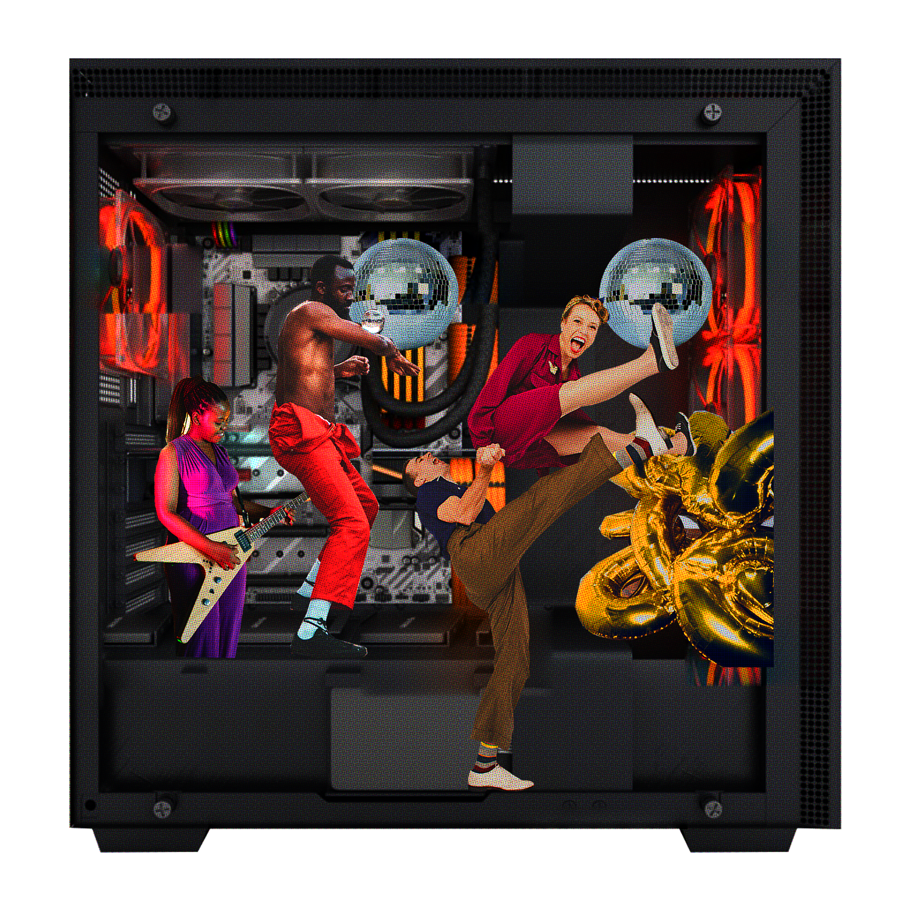

crypto enthusiasts that, in the spirit of Satoshi Nakamoto,
believe in digital interactions without third party mediation
We propose
a digital agreement so that people can interact freely,
no single provider in charge of distribution and format
We have

a functioning network based on the agreement,
the first decentralized digital
community venue for people
FreeHandle hopes to bring back human values and
independence to digital interfaces, setting people free to pour innovation, personality
and experimentation into their interactions
ON OUR JOURNEY TO FREE HANDLES WE REALIZED A FEW THINGS...
ON OUR JOURNEY TO FREE HANDLES WE REALIZED A FEW THINGS...
ON OUR JOURNEY TO FREE HANDLES WE REALIZED A FEW THINGS...
ON OUR JOURNEY TO FREE HANDLES WE REALIZED A FEW THINGS...
ON OUR JOURNEY TO FREE HANDLES WE REALIZED A FEW THINGS...
1
first... we realized interfaces are not neutral!
Behaviour drastically changes
according to the interface used to interact. :O
Take music, for example!
Today's digital interfaces feel
predictable, uniform
no human exchange or surprises...
Think of a
different
interface,
like a record store... The experience gets
fun, colourful!
Interfaces must embrace human curiosity and experimentation!
There’s no good reason for digital music discovery to be less surprising than in real life. And so with movies, literature,
everything!...
WHY DO OUR CHOICES REMAIN BOUND TO TODAY'S UNIMAGINATIVE DIGITAL INTERFACES?
WHY DO OUR CHOICES REMAIN BOUND TO TODAY'S UNIMAGINATIVE DIGITAL INTERFACES?
WHY DO OUR CHOICES REMAIN BOUND TO TODAY'S UNIMAGINATIVE DIGITAL INTERFACES?
WHY DO OUR CHOICES REMAIN BOUND TO TODAY'S UNIMAGINATIVE DIGITAL INTERFACES?
WHY DO OUR CHOICES REMAIN BOUND TO TODAY'S UNIMAGINATIVE DIGITAL INTERFACES?
We demand more. We demand freedom for our digital interactions! Which brings us to the following insight...
2
second: we realized content is ours to choose it’s form!
Our content should not adjust to a plataform, but take whichever forms we choose!
Today, the content we share online has to fit app’s rules
So it gets confined to that space, reduced, limited...
We want no plataform dictating rules that limit our ideas...
FreeHandle proposes no app, but a living project that includes a realm of independent initiatives, collectively managed!
An agreement of the community on how to exchange digital info, so content is free to take ALL forms, possibilities freely experimented with!
... as the WEB is meant to be!
FreeHandle liberates us from intermediary plataforms. We post and consume directly,
choosing formats freely! No frames, no forms.
Content is ours!
We must be free to choose how to share it!
We should be free to choose how to experiment it!
AND ON THAT NOTE, OUR LAST STOP ON FREEHANDLE'S JOURNEY OF FINDINGS...
AND ON THAT NOTE, OUR LAST STOP ON FREEHANDLE'S JOURNEY OF FINDINGS...
AND ON THAT NOTE, OUR LAST STOP ON FREEHANDLE'S JOURNEY OF FINDINGS...
AND ON THAT NOTE, OUR LAST STOP ON FREEHANDLE'S JOURNEY OF FINDINGS...
AND ON THAT NOTE, OUR LAST STOP ON FREEHANDLE'S JOURNEY OF FINDINGS...
3
third! we need a common basis for digital interaction
People are diverse and so are the interactions they engage in!
Today we struggle to find the right app for what we’d like to share
We even create versions of the content to adapt to each app audience...
WE DESERVE TO HAVE IT ALL! WE DESERVE TO HAVE IT ALL! WE DESERVE TO HAVE IT ALL!
WE DESERVE TO HAVE IT ALL! WE DESERVE TO HAVE IT ALL! WE DESERVE TO HAVE IT ALL!
WE DESERVE TO HAVE IT ALL! WE DESERVE TO HAVE IT ALL! WE DESERVE TO HAVE IT ALL!
WE DESERVE TO HAVE IT ALL! WE DESERVE TO HAVE IT ALL! WE DESERVE TO HAVE IT ALL!
WE DESERVE TO HAVE IT ALL! WE DESERVE TO HAVE IT ALL! WE DESERVE TO HAVE IT ALL!
teach
share
we talk
speak
we exchange
Forget that!
FreeHandle aspires to MORE than the establishment of any single app...
It provides fertile ground for new applications to be sown, grow and flourish!
Cryptography technics give the foundation for decentralized interaction.
An original set of protocols provides the digital space for social interactions to be experimented with!
120 lines of code (130 sloc) | 1.2 Kb
1''2FreeHandle is alive! It bets on being a first step into the journey of a collectively constructed web. It is a call out to everyone for participating and creating what the web can be!34Designed as a community focused proposition, it evolves through collectively made decisions and ideas. To be called truly social, a network must be built by and for its users!56We depend upon ourselves to start the construction of what we want the web to be! Boot, then build from that on... 78So FreeHandle proposes a starting point, a common ground on where to begin, far from knowing where this path may lead. A basic foundation for mutual understanding, the proposed software framework is very initial, consisting only of the basic needs for collective building to take off, with the community defining how it will evolve.910In all, FreeHandle takes off encompassing a set of four independent protocols - all alive and collectively maintained - such that, together, they provide the main social network funcionalities for more specific applications to be proposed and experimented with by the community. 1112A brief description of this initial architecture offered, and of each of its pertaining starting protocols, follows.13''1415+
1617The initial blueprint proposed by FreeHandle consists of a crypto network based on an original consensus mechanism (as described by breeze protocol), and of a small kit of basic social interactions protocols (namely handles, stages and synergy).1819The network receives instructions that must include essential information for it to be processed by the network, and that may also include further directions which will be ignored by the basic protocol, but will be further processed by specific protocols. 2021To achieve that, the network protocol makes use of a void instruction. Aside from fee exchange, the void instruction does not change the main network status. By use of the void instruction, each specific protocol will process the directions of the instruction that pertain to it, and will ignore the remaining portion which does not. 2223For example, handles' protocol instructions will be processed from breeze's protocol void instructions, implementing the proof of authorship functionality. Synergy's protocol instructions will be processed from handles' protocol void instruction, implementing the co-authorship functionality. And so it can be with all further proposed specialized protocols.2425So the network works as a foundation for specialized applications to work in following stages of the full processing of the void instruction. The especialized applications directions included in the void instruction may encompass whichever social protocols might be proposed.2627As of now, FreeHandle proposes three specialized social protocols (handles, stages and synergy) running on top of the network, defined by the breeze protocol. 28
29+
3031Breeze protocol is the groundwork of the decentralized information exchange functionality. It is a multipurpose crypto network, offering a Proof-of-Stake consensus layer for other blockchains and protocols to be implemented on top of it. 3233It provides basic actions for the implementation of Proof-of-Stake rules and, in addition to those, a singular void action. This void action does not impact network's state, apart from fee exchange. Through the use of this void action it is possible to submit actions related to more specialized protocols that will be operating on top of Breeze's consensus layer. 3435An additional trait of Breeze's protocol initial implementation is that it provides decoupled network functionalities as independent services. The tree uncoupled services are: block creation and consensus, block storage and indexing, and finally gateway connection for validator nodes.3637The uncoupled architecture, alog with the void action, make it easy for specialized social protocols to be implemented on top of the network as a forth service! 3839To find out more about breeze protocol, check breeze collective. And here you can check breeze's official repo.40
41+
4243Handles protocol is a social protocol designed to run on top of the Breeze network. It provides the functionality of named entities within the network, implementing a social identity layer for the specialized protocols to identify users. 4445Handles protocol uses the void action from breeze protocol to authenticate the author of a given instruction.4647Also, it provides a functionality called Power of Attorney (PoA). A PoA can be either granted or revoked by an user. Granting a PoA instructs the network to allow actions to be signed by the appointed "attorney" on behalf of the user. Revoking reverses this authorization. 4849The PoA feature can be particularly important in keeping the handle ownership an power in the hands of the user.5051New social applications can be adopted and discarded upon demand by a given user, by granting and revoking the previously granted Power of Attorney, without any loss of ownership over content and namespace!5253To find out more about handles protocol, check handles collective. And here you can check handles' official repo.54
55+
5657Stages protocol is also a social protocol designed to run on top of the Breeze network. It provides the functionality of digital spaces, called stages, so that users can organize access to the content published on the breeze blockchain to various audiences with the simple exachange of a key.5859Once a stage is created, the owner can give different privileges within this stage to other users. Privileges range from viewing to posting, also managing and ultimately refreshing access keys to any given stage.6061Stages protocol makes it easier for content exchanged on top of the Breeze network to be accessible to the curated audience chosen by the user.6263To find out more about stages protocol, check stages collective. And here you can check stages' official repo.64
65+
6667Synergy protocol is where everything comes together. It is a social protocol that runs on top of the breeze network, while also being the place where the breeze protocol evolution is being discussed and decided upon. And not only breeze protocol is being discussed through synergy, but also handles protocol, stages protocol, and synergy protocol itself! And many, many others that may yet come... And are all welcome!6869Synergy was designed to provide a foundation for projects to be worked on collectively. It is a space for the community to build new projects and proposed ideas that may be experimented within FreeHandle, on top of breeze network.7071Main functionalities provided by synergy rely upon two concepts: collectives and drafts.7273A collective construct is a group of people with a commom goal that performs actions within the protocol as a unit, according to previously agreed upon consensus rules. Every action taken on behalf of any given collective triggers a voting mechanism for its participants. Actions will only be processed if consensus is achieved.7475A draft is a basic element for publishing contributions that are in progress. The are to be used by Synergy members for public idea elaboration and collaboration. Drafts can be authored by either a single member, a group of members, or a collective.7677Collectives can sign any action within the Synergy protocol and only a collective can create an event, which is a means for collective members to interact simultaneously for a period of time.7879Drafts can receive edit proposals, can be released when considered in "final" form, and can be endorsed by collectives with a stamp. Collections of drafts can be curated in boards.8081Synergy is a collective within Synergy. To contribute you are welcome to join it! And so with breeze collective, handles collective, etc. Join us in creating a new web!8283To find out more about synergy protocol, check synergy collective. And here you can check synergy's official repo.84
85+
8687To sign into the synergy protocol you can start here!8889If you would rather browse synergy network anonymously, just jump here and take a look!9091To check any of the listed protocol's repos just go to the FreeHandle's GitHub! All help is most welcome.92